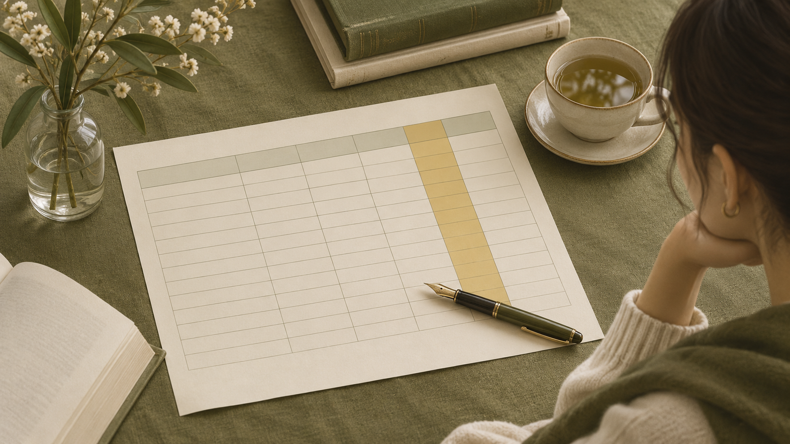
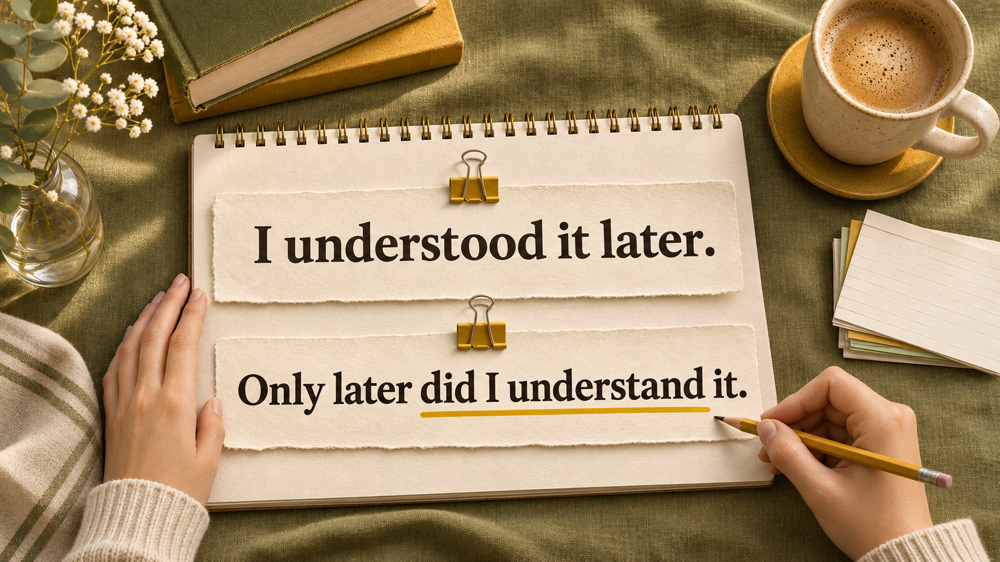
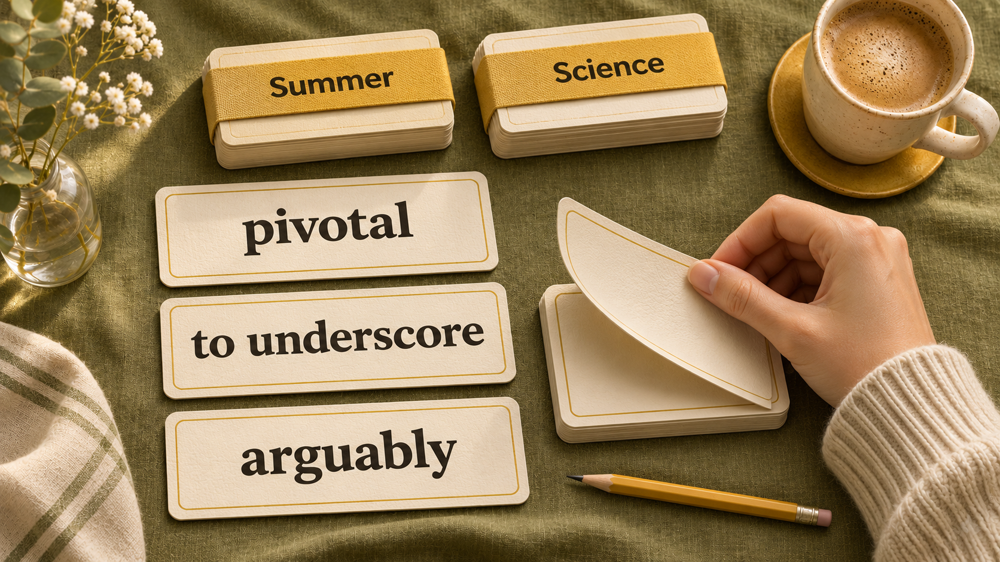
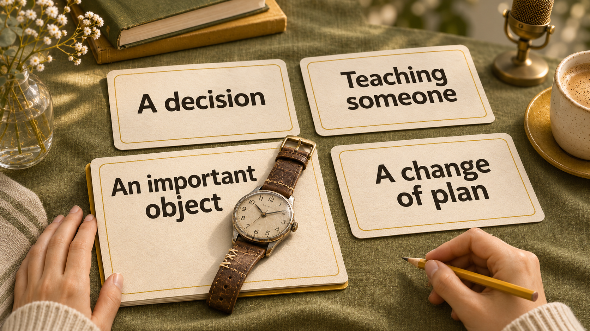
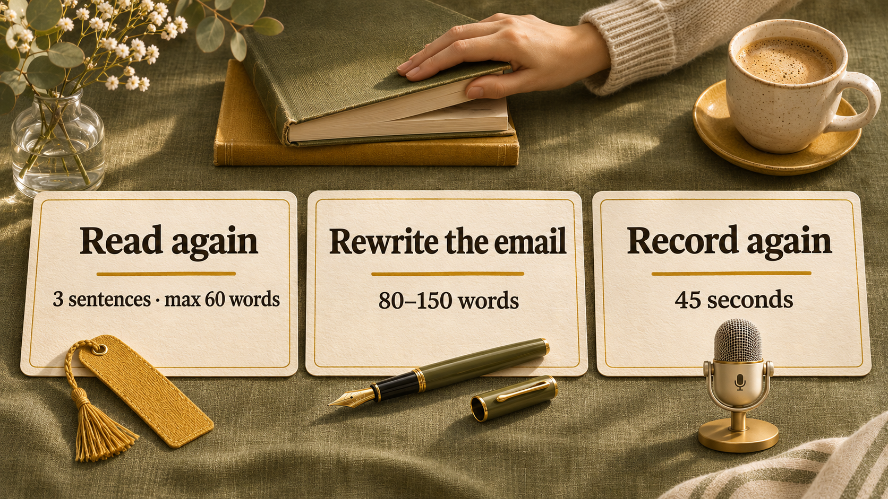
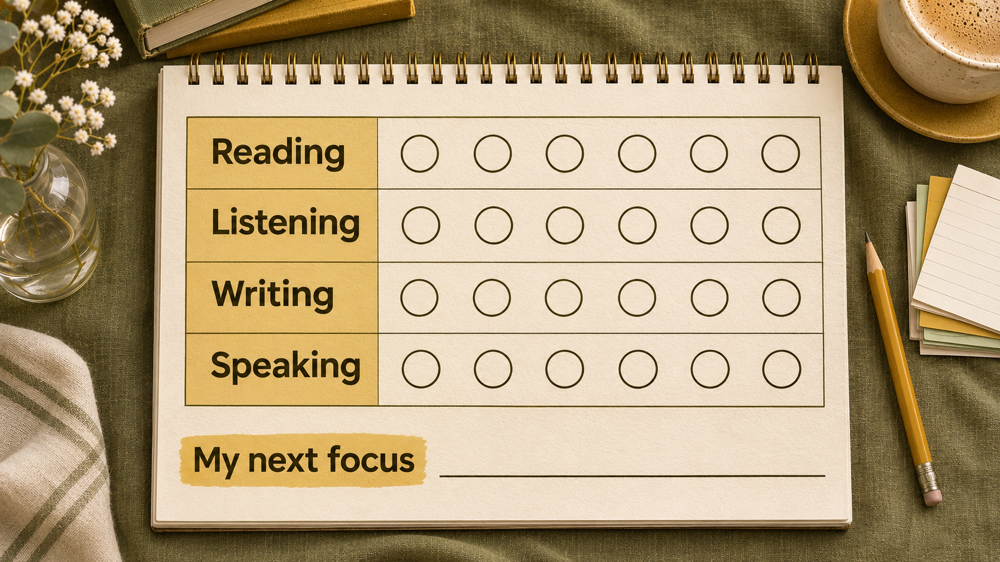

Welcome back, Rostislav. Today we move from the trial diagnostic into the first grammar engine of Your TOEFL / IELTS path. The spine of the lesson is Raymond Murphy's English Grammar in Use (2nd ed.), Units 1–4 and Units 46–47 — plus the official task types from ets.org and ielts.org. All drills follow exam rules: no hint before Your answer, no Russian in the interface, mixed option order.
Murphy Unit 1 · edges only — changing-situation verbs, “always + V-ing”, future arrangement.
Prepare 30 seconds, then speak 60–90 seconds into the mic (or just out loud). The reveal below each prompt lists the exact structures the examiner will look for.
Describe what is happening, whether the change is fast or slow, who or what is driving it, and whether You welcome it or not.
Who is it, what is the habit, when did You first notice it, how do You react, and would You actually miss it if it stopped?
Mention at least four fixed arrangements (meetings, calls, appointments, trips, dinners) and at least one thing You are still only going to do (no fixed slot yet) and one will-decision You are making right now.
Each item hides a trap. The “obvious” answer is often the wrong one. Read the whole context before picking.
Each item mixes two forms on purpose. Choose simple OR continuous for each slot — pay attention to the second slot.
For each prompt, write ONE full sentence. The target structure is given in bold. No basic “I am sitting in my chair” — each item forces an edge use.
Self-check: open Your sentences aloud. If any of them could work with present simple instead without losing meaning — rebuild that sentence.
Murphy Unit 2 · edges only — speech-act present, timetable future, academic register, here comes.

Prepare 30 seconds, speak 60–90 seconds out loud. Reveal the target language only after Your attempt.
Confess that You are approaching them late, apologise concisely, and request a specific action by a specific date.
The trick: don't say “will”. Use present simple for every scheduled event, continuous only if You are personally attending.
You should say: (1) author / title, (2) the central claim, (3) one key piece of supporting evidence, (4) one counter-point the author addresses. Use present simple stance verbs throughout.
No “water boils at 100” here. Every item forces one of the four edges.
All five slots must be in present simple. The challenge is recognising that the simple is obligatory where continuous looks tempting.
No “I work in an office” basics. Each prompt forces one of the four edges from this section.
Self-check: no sentence should work with present continuous without changing meaning or sounding odd. If it does — rebuild.
Murphy Unit 3 · edges only — have splits, annoyed “always + V-ing”, temporary live/work/stay, I'm loving it modern shift.
| HAVE = own / relation / state → simple only | HAVE = action / experience → continuous OK |
|---|---|
| I have three brothers. | I 'm having breakfast. Call me later. |
| Anna has a Volvo. | We are having a great time in Lisbon. |
| They have flu. | She is having a shower. |
| Do You have any questions? | We are having dinner at 8. |
60–90 seconds per prompt, no prep after the first one. Reveal target language after Your attempt.
You must contrast I have (possession/relation) with I'm having (meal / experience / shower / meeting).
Each verb must appear twice — once in simple (permanent) and once in continuous (temporary).
Use the continuous form of a classically stative verb, then explain WHY continuous (not simple) is accurate here.
Each sentence has one wrong verb form. Rewrite the sentence correctly.
Murphy Unit 4 · the verbs that normally stay in present simple — and the four tricky dual-meaning ones.
| Simple = character / general | Continuous = behaviour / now |
|---|---|
| He is selfish. (character) | He is being selfish. (acting that way now) |
| I think she's right. (opinion) | I 'm thinking about the problem. (mental process) |
| The soup tastes good. (quality) | The chef is tasting the soup. (action) |
| You look well today. (appearance) | You 're looking well today. (both OK) |
Speak each pair back-to-back, shifting from simple to continuous mid-sentence. Reveal only after Your attempt.
Must contain BOTH X is + adjective (character) AND X is being + adjective (behaviour right now).
You should include: two visual details, two auditory details, one smell detail. Avoid I see / I hear as stand-alone verbs — always I can see / I can hear.
Compiled from Murphy Units 1–4, 17, 19–22, 46–50 and the word-order appendix. These are the B2+ calibration points — the moves that separate a B2 from a C1 answer in TOEFL Speaking and IELTS Writing.

| Form | When to use | Example |
|---|---|---|
| I'm doing | fixed personal arrangement (diary) | I'm meeting Tom at 6. |
| I do | public timetable (not Yours) | The train leaves at 11:30. |
| I'm going to do | intention + evidence right now | Look at those clouds — it's going to rain. |
| I'll do | decision made at the moment of speaking | The phone's ringing. — I'll get it. |
| Direct | Reported | Direct | Reported |
|---|---|---|---|
| will | would | could | could (no change) |
| can | could | would | would (no change) |
| may | might | should | should (no change) |
| must (obligation) | had to | might | might (no change) |
| shall | should | ought to | ought to (no change) |
| Direct | Reported | Direct | Reported |
|---|---|---|---|
| now | then / at that moment | here | there |
| today | that day | this | that |
| tomorrow | the next day / the following day | these | those |
| yesterday | the day before / the previous day | last week | the week before / the previous week |
| ago | before | next week | the next week / the following week |
Each item tests one of the ten edges above. Pick and check.
Compiled from Martin Hewings, Advanced Grammar in Use (Cambridge, C1 reference), Units 1 & 2. These are the rules that Murphy does not state — the C1 calibration points.

Each item hides a C1-level trap. Read the context in full before picking.
Open-ended. For each prompt, write ONE sentence that deploys the target rule exactly as Hewings describes it.
No auto-check here — read each sentence aloud, then open the sample. If Your sentence works with simple when the rule demands continuous (or vice versa), rebuild it.
A breather between grammar blocks. Twelve high-value academic collocations, ten modern idioms the exams actually reward, and a Quizlet-style flip deck for cold recall. All built around TOEFL / IELTS task types (Writing, Speaking Part 3, Reading).
These are the exact word partnerships examiners look for in Band 7+ writing. Learn the whole chunk, not the single verb.
Type the missing word so that the collocation matches the context. Case-insensitive; apostrophes normalised.
No “it's raining cats and dogs”. These are idioms used in 2026 by professionals, journalists, podcasters — the ones that earn points in IELTS Speaking Part 3 without sounding like a textbook.
Each item has one correct idiom from the list above. Pick it from the dropdown.
Mix of C1 vocabulary, exam-specific terms, and selected items from the collocation & idiom banks above. Tap a card to reveal the back, tap again to flip back.
👆 tap any card to flip · tap again to flip back
Compact additional exam-style practice to round out the lesson.
Early research on bilingualism suggested a clear cognitive advantage. [A] Bilingual children seemed to outperform monolingual peers on tests of working memory. [B] Over the past decade, several large-scale replications have failed to reproduce these effects. [C] The new Danish study tracked 3,400 children over six years and found no measurable difference in working memory between the two groups. [D] The author therefore proposes a more cautious interpretation of the earlier work.
Official TOEFL iBT 2026 format · Read an Academic Passage. Audio-first 3 parts · listen → read → cloze.
Press play, listen once, then answer the 5 pre-reading questions by ear only.
Press “Reveal text” after You have attempted Part A.
Use the information in the passage only.
Simple or continuous? Think about Units 1–4.
Lecture style used in both IELTS Section 4 and TOEFL Listening · keep an ear out for reported-speech phrases — they signal section 8 ahead.
Listen once. Answer by ear only.
Complete the summary using the right verb form and the right reporting verb. Previews section 8.
Murphy Units 46 & 47 · backshift, say/tell, imperatives, reported questions. Everything TOEFL Integrated Writing demands.
| Direct (what they said) | Reported (what You now say) |
|---|---|
| “I am tired.” | He said (that) he was tired. |
| “You are late.” | She told me (that) I was late. |
| “I work here.” | He said he worked there. |
| “I can swim.” | She said she could swim. |
| “I will come.” | He said he would come. |
| “I must leave.” | She said she had to leave. |
| “I have seen it.” | He said he had seen it. |
Rewrite each direct statement as reported speech using the prompt in bold.
Official IELTS Speaking Part 2 format · 1-minute prep · 2-minute monologue · pick one cue card for today.

You should say:
You should say:
You should say:
Official TOEFL iBT 2026 format · 150–225 words · summarise how the lecture responds to the reading · reported speech is the backbone.
Many educators argue that handwriting should be removed from primary-school curricula. They point out that digital keyboards are faster, more legible, and better suited to the modern workplace. In addition, time saved on penmanship could be redirected to coding or critical-thinking skills, which are considered more valuable for a child's future career. Finally, they note that handwritten notes are rarely used outside the classroom.
Summarise the points made in the lecture, being sure to explain how they cast doubt on the specific points made in the reading passage. Use reported speech: The lecturer said that… She argued that… The author claims that…

After Your draft, follow the three-step recap routine above: re-read the reading in 3 sentences, rewrite Your response tightened to 80-150 words, then record Your summary in 45 seconds without notes.
Two tabs under the banner. Урок = today's drill. Тетрадка = everything Rostislav has covered so far (L1 diagnostic + L2 today).
What Rostislav has covered so far: L1 · 22 Nov · Trial diagnostic & plan · L2 · 25 Nov · four present tenses + reported speech (today).
L1 on 22 Nov was a diagnostic trial: level B2+, goal TOEFL/IELTS, no new grammar formally covered — so this tab is almost entirely L2.
All ten in one minute. If You miss more than three, we revisit next lesson.
